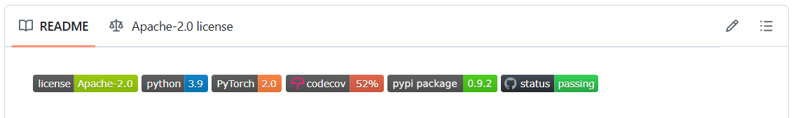

Github Actions
CI/CD, воркфлоу и автоматизация в GitHub.
-
GitHub Workflow
Workflow — это YAML-файл в
.github/workflows/, состоящий из триггеров (on), наборов заданий (jobs) и шагов (steps).Когда нужно автоматизировать сборку, тесты, линтинг, релизы или деплой.
# .github/workflows/ci.yml name: CI on: [push, pull_request] jobs: test: runs-on: ubuntu-latest steps: - uses: actions/checkout@v4 - run: echo "Hello from workflow"Workflow облегчает жизнь разработчикам, автоматизируя рутинные задачи внутри репозитория.
- Экономия времени: не нужно вручную запускать тесты, линтеры или сборку — всё делается автоматически при каждом пуше или пулл-реквесте.
- Повышение качества кода: проверки (CI) запускаются всегда по одним и тем же правилам, уменьшая вероятность ошибок из-за "человеческого фактора".
- Единообразие процессов: все сборки, тесты и релизы проходят одинаково — нет различий между локальной машиной и сервером.
- Ускорение релизов: быстро видеть, прошёл ли код все проверки — и если нет, сразу понятно, где ошибка.
- Автоматизация любых действий: можно подключить деплой, автообновление документации, публикацию пакетов и т.д.
- Прозрачность: история всех запусков workflow хранится на GitHub.
Где лежат workflow GitHub Actions?
В
.github/workflows/*.yml(или.yaml).Из чего состоит минимальный workflow?
Триггер
on, один или несколькоjobs, внутри —stepsсusesилиrun.Чем job отличается от step?
Job — параллельная единица на runner; step — последовательная команда внутри job.
Зачем запускать CI на каждый push и PR?
Одинаковые автоматические проверки у всех и прозрачная история «зелёный/красный» в GitHub.
-
Badges
Badges — это динамические значки в
README.md, показывающие статус CI/CD, покрытие тестами, версии и другие метрики проекта.# В README.md: [](https://github.com/user/repo/actions) [](https://codecov.io/gh/user/repo) [](LICENSE)
- GitHub Actions автоматически генерирует badge для каждого workflow
- Цвет значка меняется в зависимости от статуса: зелёный (успех), красный (ошибка), жёлтый (в процессе)
- Клик по значку ведёт на страницу с деталями проверок
Чтобы дать быстрый обзор состояния проекта и показать, что код регулярно тестируется и поддерживается.
Откуда берётся badge статуса CI в README?
URL вида
.../actions/workflows/<имя>.yml/badge.svg— GitHub отдаёт картинку по состоянию последнего run.Меняется ли badge автоматически?
Да — после каждого завершённого workflow run.
Зачем badge coverage или Python version?
Быстро показать зрителю репозитория актуальные метрики без чтения CI.
Почему badge не заменяет просмотр логов?
Показывает только pass/fail; причина ошибки — в Actions tab.
-
Триггеры
Триггеры определяют, когда запускать workflow: по событиям GitHub, по CRON, вручную.
push/pull_request— CI;schedule— периодические задачи;workflow_dispatch— ручной запуск с параметрами.# .github/workflows/triggers.yml name: Triggers on: push: branches: [main] paths: ["src/**"] pull_request: types: [opened, synchronize, reopened] workflow_dispatch: inputs: env: description: "Target environment" required: true default: "staging" schedule: - cron: "0 6 * * 1" # каждую неделю по понедельникам 06:00 UTC jobs: noop: runs-on: ubuntu-latest steps: - run: echo "Triggered!"# Запуск по таймеру (каждый день в 3:30 UTC) on: schedule: - cron: "30 3 * * *" jobs: nightly: runs-on: ubuntu-latest steps: - run: echo "Nightly job"# Ручной запуск с параметрами (workflow_dispatch) on: workflow_dispatch: inputs: version: description: 'App version' required: true default: 'latest' dry_run: description: 'Dry run?' required: false default: 'false' jobs: deploy: runs-on: ubuntu-latest steps: - run: echo "Deploy ${{ github.event.inputs.version }} (dry_run: ${{ github.event.inputs.dry_run }})"Триггеры позволяют автоматически запускать workflow в нужные моменты:
- push/pull_request: проверяют код сразу после коммита или при создании/изменении PR.
- schedule (cron): полезно для регулярной проверки статуса проекта.
- workflow_dispatch: позволяет запускать процессы вручную и передавать параметры.
Какой триггер запускает CI при открытии PR?
pull_request(и частоpushв ветку PR).Для чего нужен
scheduleс cron?Периодические задачи: ночные тесты, обновление зависимостей, мониторинг.
Что даёт
workflow_dispatch?Ручной запуск workflow из UI GitHub, иногда с параметрами.
Почему важно не ставить CI на каждое событие подряд без фильтров?
Лишние запуски тратят минуты Actions и замедляют feedback.
-
Проверка разных версий Python
Матрица версий Python позволяет прогонять тесты параллельно на нескольких версиях интерпретатора.
Поддерживаете несколько версий Python (например, 3.9–3.12) и хотите гарантировать совместимость.
# .github/workflows/python-matrix.yml name: Python Matrix on: [push, pull_request] jobs: test: runs-on: ubuntu-latest strategy: matrix: python: ["3.9", "3.10", "3.11", "3.12"] steps: - uses: actions/checkout@v4 - uses: actions/setup-python@v5 with: python-version: ${{ matrix.python }} - run: pip install -r requirements.txt - run: pytestИспользование матрицы версий Python в CI помогает автоматизировать проверку кода на нескольких поддерживаемых версиях интерпретатора. Это гарантирует, что проект будет корректно работать у всех пользователей — независимо от того, какую версию Python они используют.
Такой подход позволяет заранее обнаружить несовместимости (например, если используется новая конструкция языка или устаревшая зависимость) и повысить качество и надёжность библиотеки или приложения.
Что делает
strategy.matrixв job?Запускает job несколько раз с разными значениями (например, версии Python).
Как в step обратиться к версии из матрицы?
${{ matrix.python-version }}вsetup-pythonили команде.Зачем тестировать на 3.9 и 3.12 одновременно?
Поймать несовместимость синтаксиса и зависимостей до релиза.
Параллельны ли job'ы матрицы?
Да — каждая комбинация matrix обычно идёт отдельным runner'ом.
-
Проверка на разных ОС
Матрица по ОС позволяет запускать те же проверки на Linux, Windows и macOS, выявляя системные различия.
Кроссплатформенные библиотеки/CLI, нативные зависимости, различия путей, прав, оболочек.
# .github/workflows/os-matrix.yml name: OS Matrix on: [push, pull_request] jobs: test: strategy: matrix: os: [ubuntu-latest, windows-latest, macos-latest] python: ["3.10", "3.11"] runs-on: ${{ matrix.os }} steps: - uses: actions/checkout@v4 - uses: actions/setup-python@v5 with: python-version: ${{ matrix.python }} - run: pip install -r requirements.txt - run: pytest -qИспользование матрицы по ОС в CI помогает автоматизировать проверку кода на разных операционных системах. Это гарантирует, что проект будет корректно работать на всех платформах — независимо от того, какую операционную систему использует пользователь.
Такой подход позволяет заранее обнаружить несовместимости (например, нативные зависимости или различия в путях файловой системы) и повысить надёжность библиотеки или приложения.
Зачем matrix по
ubuntu,windows,macos?Поймать баги путей, прав, shell и нативных библиотек, видимые только на одной ОС.
Почему на Windows падает
rm -rf, написанный в bash-стиле?По умолчанию другая оболочка и другие команды — нужен
shell: bashили кроссплатформенный скрипт.Что указывают в
runs-onдля matrix?${{ matrix.os }}— напримерubuntu-latest,windows-latest.Когда matrix по ОС избыточен?
Для чистого Linux-сервиса без кроссплатформенных пользователей.
-
Несколько workflow в проекте
В репозитории может быть несколько независимых workflow для разных целей: CI, линтинг, релизы, деплой, периодические проверки.
Когда нужно разделить ответственность, ускорить сборки, ограничить триггеры и права по задачам.
# .github/workflows/ # ci.yml — сборка+тесты для всех пушей/PR # lint.yml — быстрый линт и format-check на PR # nightly.yml — ночные проверки по расписанию # ci.yml — общий CI name: CI on: [push, pull_request] permissions: { contents: read } jobs: test: runs-on: ubuntu-latest steps: - uses: actions/checkout@v4 - uses: actions/setup-python@v5 with: { python-version: "3.11" } - run: pip install -r requirements.txt && pytest -q # lint.yml — быстрые статические проверки name: Lint on: pull_request: paths: ["src/**", ".github/workflows/lint.yml"] permissions: { contents: read } jobs: lint: runs-on: ubuntu-latest steps: - uses: actions/checkout@v4 - run: pipx run pre-commit run --all-files # nightly.yml — запускается по расписанию name: Nightly on: schedule: - cron: "0 2 * * *" permissions: { contents: read } concurrency: group: nightly cancel-in-progress: true jobs: smoke: runs-on: ubuntu-latest steps: - uses: actions/checkout@v4 - run: ./scripts/smoke.shРазделение на несколько workflow даёт точные триггеры, разные
permissions, независимые статусы в PR и быстрее обратную связь.- Гибкость в настройке триггеров: можно запускать разные проверки на разные события.
- Быстрее обратная связь: статические проверки (lint) идут параллельно с тестами.
- Прозрачность статусов: в pull request отображаются отдельные статусы для каждого workflow.
- Изоляция прав: каждому workflow можно задать свои
permissionsи секреты.
Сколько workflow может быть в одном репозитории?
Несколько независимых YAML в
.github/workflows/.Зачем разделять CI и deploy на разные файлы?
Разные триггеры, права и статусы checks в PR.
Запускаются ли все workflow на каждый push?
Только те, чьи
on:совпали с событием (если нет path-фильтров, мешающих запуску).Как nightly-тесты не мешать быстрому PR CI?
Вынести в отдельный workflow с
schedule, без тяжёлых step в основном CI.
-
Контексты и выражения
Контексты (например,
github,env,secrets) дают доступ к данным события и окружению; выражения пишутся как${{ ... }}.Для условного выполнения шагов, доступа к секретам и параметрам запуска.
# .github/workflows/if-secrets.yml name: Conditions on: [push] jobs: build: runs-on: ubuntu-latest steps: - uses: actions/checkout@v4 - if: ${{ github.ref == 'refs/heads/main' }} run: echo "Main branch build" - run: echo "Key: ${{ secrets.API_KEY }}"Контексты и выражения делают workflow гибкими и адаптивными:
- Гибкая логика: можно запускать шаги только при определённых условиях (например, только для main-ветки).
- Безопасность: секреты и токены не прописываются прямо в коде, а подтягиваются из
secrets. - Переиспользуемость: значения меняются автоматически в зависимости от контекста.
- Удобство поддержки: легко менять поведение workflow путём изменения переменных или секретов.
Как в YAML обратиться к имени ветки в событии push?
${{ github.ref_name }}или контекстgithubв выражении.Где брать секреты в workflow?
${{ secrets.MY_TOKEN }}— значения задаются в Settings, не в коде репозитория.Зачем
if: github.ref == 'refs/heads/main'на step?Выполнять шаг только для ветки
main(например, деплой).Почему нельзя печатать secrets в логах?
GitHub может их замаскировать, но утечка через echo всё равно риск компрометации.
-
Права и безопасность
permissionsзадаёт права токенаGITHUB_TOKEN; секреты хранятся в настройках; версии actions желательно фиксировать.Всегда — принцип наименьших прав и закрепление версий (sha) для сторонних actions.
# .github/workflows/permissions.yml on: [pull_request] permissions: contents: read jobs: lint: runs-on: ubuntu-latest steps: - uses: actions/checkout@v4 - run: echo "${{ secrets.API_KEY }}"Уменьшение прав снижает риск злоупотреблений; секреты не логируйте и не печатайте в явном виде.
- Минимизация рисков: если у workflow меньше прав, злоумышленник не сможет навредить даже при уязвимости.
- Защита секретов: секреты (пароли, токены) не попадают в логи и случайные коммиты.
- Контроль версий actions: закрепляя версию стороннего действия (по SHA), вы защищены от неявного обновления с уязвимостью.
- Аудит: видно, кто и для чего получает доступ — легче обнаружить лишние привилегии.
Что ограничивает блок
permissionsв workflow?Права автоматического
GITHUB_TOKENна contents, packages, pull-requests и т.д.Зачем принцип наименьших прав для CI?
Скомпрометированный workflow или action не сможет лишний раз писать в репозиторий.
Почему actions лучше пинить на commit SHA, а не на
@v3?Тег может быть переписан; SHA фиксирует конкретный код action.
Где хранить production-секреты?
GitHub Secrets / Environments, не в
.envвнутри git.
-
Переиспользуемые workflow
Workflow можно вызывать из другого workflow через
workflow_call, передавая параметры и секреты.Для DRY-подхода в монорепах и мультипроектах.
# .github/workflows/reusable.yml (библиотечный) on: workflow_call: inputs: node: required: true type: string secrets: NPM_TOKEN: required: true jobs: build: runs-on: ubuntu-latest steps: - uses: actions/checkout@v4 - uses: actions/setup-node@v4 with: { node-version: "${{ inputs.node }}" } - run: npm ci # .github/workflows/consumer.yml (использующий) name: Consumer on: [push] jobs: use: uses: ./.github/workflows/reusable.yml with: node: "20" secrets: NPM_TOKEN: ${{ secrets.NPM_TOKEN }}Переиспользуемые workflow позволяют централизовать общие процессы (тесты, сборка, публикация) и избавляют от дублирования кода в CI/CD — достаточно обновить логику только в одном месте. Особенно полезно для монорепозиториев и команд с множеством схожих продуктовых потоков.
Какой ключ включает reusable workflow?
on: workflow_callв вызываемом файле.Как вызвать его из другого workflow?
Job с
uses: org/repo/.github/workflows/ci.yml@refи блокwith:/secrets:.Зачем DRY для CI в монорепо?
Общие шаги lint/test меняют в одном месте, а не в десяти копиях YAML.
Что передают через
secrets: inherit?Проброс секретов вызывающего репозитория в reusable workflow без дублирования имён.
-
Выборочные запуски и path-фильтры
В монорепо можно запускать job'ы только при изменениях в нужных пакетах с помощью
paths/paths-ignoreи условий.Чтобы ускорить CI и экономить минуты при работе с множеством пакетов.
# .github/workflows/monorepo.yml name: Monorepo selective CI on: push: branches: [main] paths: - "packages/api/**" - ".github/workflows/monorepo.yml" jobs: api-tests: runs-on: ubuntu-latest steps: - uses: actions/checkout@v4 - run: cd packages/api && npm ci && npm testВыборочные запуски с помощью
pathsнужны для экономии CI-минут в больших репозиториях:- Экономия ресурсов: запускаются только те проверки, которые реально нужны при изменении определённых директорий.
- Быстрее обратная связь: тесты одного пакета запускаются независимо.
- Удобно для монорепозитория: если в проекте много под-проектов, можно настроить запуск только нужных workflow.
- Чище история билдов: нет "шумных" запусков в Actions.
Пример: если у вас 5 пакетов, но вы меняете лишь один — CI проверит только его.
Что делают
paths/paths-ignoreвon.push?Запускают workflow только если изменились файлы по указанным шаблонам.
Зачем это в монорепо с десятком пакетов?
Не гонять тесты API, если меняли только документацию другого модуля.
Можно ли комбинировать path-фильтр с
ifна job?Да — двойная защита: не стартовать лишний job и не выполнять дорогие step.
Какой риск у слишком агрессивных
paths-ignore?Пропустить поломку, если общий конфиг влияет на несколько пакетов.
-
Timeouts, retries и продолжение при ошибках
timeout-minutesограничивает длительность job/step; повторные попытки и игнорирование ошибок управляются стратегиями иcontinue-on-error.Для контроля зависающих задач и экспериментальных проверок.
# .github/workflows/timeouts.yml name: Timeouts on: [push] jobs: flaky: runs-on: ubuntu-latest timeout-minutes: 20 steps: - run: ./run-flaky-tests.sh continue-on-error: truetimeout-minutes: позволяет избежать зависания job/step на неопределённое время. Экономит CI-минуты и ускоряет обратную связь.continue-on-error: иногда отдельный шаг не критичен для всего пайплайна — позволяет идти дальше даже при ошибке.- Retries (strategy): для нестабильных ("flaky") тестов полезно задавать попытки повторного запуска.
Все эти параметры вместе повышают надёжность CI: pipeline быстрее выявляет реальные проблемы и освобождает ресурсы при зависаниях.
Зачем
timeout-minutesна job?Остановить зависший процесс и не занимать runner бесконечно.
Что делает
continue-on-error: trueна step?Workflow продолжится, даже если шаг упал — полезно для некритичных проверок.
Когда уместны retries для flaky-тестов?
Временные сетевые сбои; но лучше чинить тест, а не маскировать баг.
Чем опасен слишком большой timeout?
Долго платите минутами Actions и поздно узнаёте о зависании.